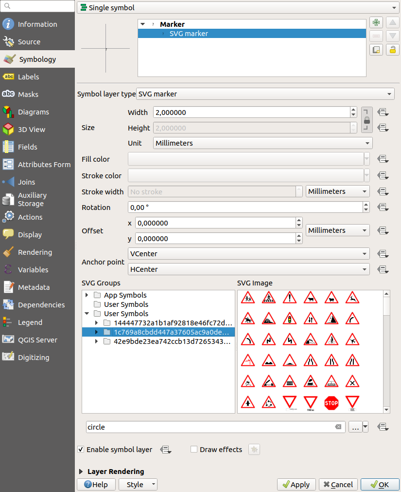
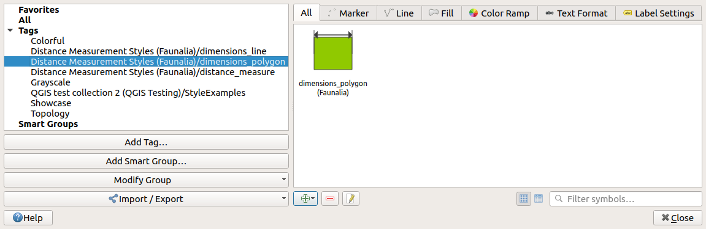
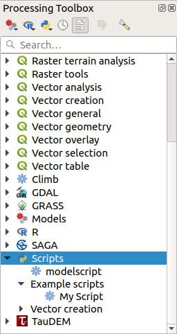
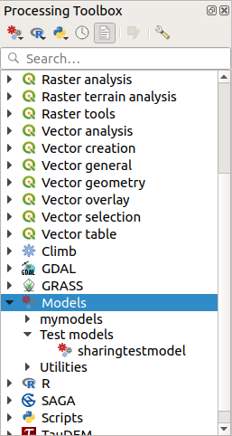
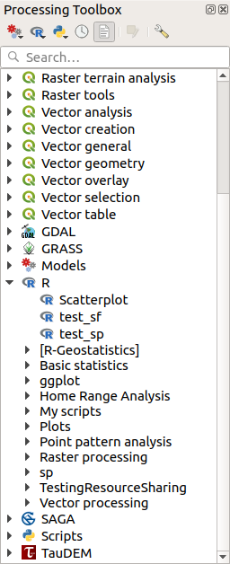

Installing a collection#
Loading collections#
Now that you have the QGIS Resource Sharing plugin installed, you can browse available collections (from the repositories registered in the Settings tab) and install them in your file system, making them available to QGIS.
The first time you use the plugin, there will be no collections in the All collections tab.
But once you have loaded the available repositories, the officially approved collections should be there.
Loading the repositories is done by pushing the Reload Repositories button in the Settings tab.
It is a good idea to reload the repositories now and then, so that your local copies are kept up-to-date.
To install a collection, you go to the All collections tab, select it and click the Install button (below the collection
description).
The resources in the collection will be installed (the location in the file system depends on their type).
Note: When you have installed a collection from a repository, the complete repository will be duplicated in your local file
system (under resource_sharing/repositories in the QGIS user directory).
In addition, the collection will be added under the collections directory (resource_sharing/collections).
The directory name is composed of the collection name and the repository name (the QGIS R script collection from the QGIS Official Repository is located in the resource_sharing/collections/QGIS R script collection (QGIS Official Repository)
directory).
The collection folder will have sub-directories for the resources as desrcibed in the repository structure.
Resources types#
SVG#
If the collection contains SVGs, the path to the collections folder will be included in your QGIS SVG search path.
The SVGs will be available when editing symbols (under the User Symbols section in SVG Groups).

Symbol#
The symbols, colorramps, textformats (since version 0.14.0) and labelsettings (since version 0.14.0) from the style XML files in the collection will become available in the Style Manager.

For each symbol XML file, the plugin will create a tag where the last part of the name is the filename of the XML file (without the .xml). The first part of the tag name identifies the collection.
Click on the tabs All, Marker, Line, Fill, Color Ramp, Text Format or Label Settings to see the items installed from the collection.
Expression#
since version 0.15.0
The expressions defined in the collection’s expression (JSON) files are made available under User expressions in the expression dialogue for QGIS versions 3.12 and higher.
The (JSON) file name is used as a prefix in the expression name.
Style#
For QML styles, the plugin will resolve the image or SVG paths for you.
You can click on the Open folder button to see where in the file system the QML style file is located, for later use.
Processing Script#
The Python scripts will be copied to the processing scripts folder and thereby become available for use in the Processing Toolbox under the Scripts menu.

Processing Model#
since version 0.10.0
The model fioles will be copied to the processing models folder and become available for use in the Processing Toolbox under the Models menu.

R Script#
since version 0.9.0
The R scripts in the collection will be copied to the R scripts folder and become available for use in the Processing Toolbox under the R menu.

Dataset QA checklists#
since version 0.16.0
The checklists defined in the collection’s checklist (JSON) files are made available to the Dataset QA Workbench plugin by copying them to the checklists folder in the user’ QGIS directory.